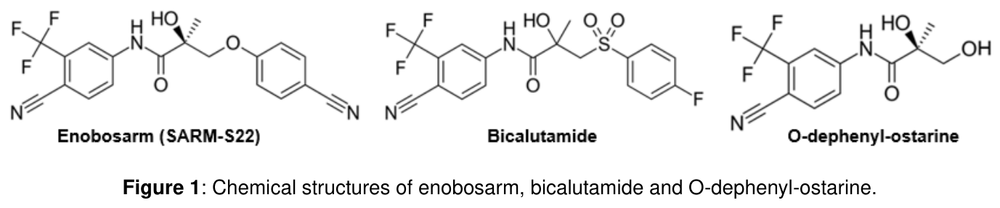

Technical Letters · TL12
Edition v3.0, 2021 (version 3.0) · effective 1 January 2021 · current
Retrieved on 26 November 2026 from https://www.wada-ama.org/sites/default/files/resources/files/tl12_enobosarm_eng_2021.pdf
Editions: v3.0, 2021 (current) · v2.0, 2018
p. 1
ENOBOSARM (OSTARINE)
1.0 Introduction
WADA wishes to draw the attention of the Laboratories to the structural similarities between Arylpropionamide based Selective Androgen Receptor Modulators (SARMs; prohibited under section "S1.2 Other Anabolic Agents" of the Prohibited List) and their non-prohibited analogs, and the need to include appropriate target Analytes into the Analytical Testing Procedures to ensure the correct reporting of analytical findings for these Prohibited Substances.
Technical Letter TL07 (Andarine - Flutamide) addressed analytical findings for O-dephenyl-andarine, a Metabolite of Andarine which may also be present in a Sample as a Metabolite of the permitted anti-androgen Flutamide[1].
This TL12 pertains to the reporting of analytical results for another SARM, Enobosarm (also known as Ostarine or S-22 ).
Enobosarm is excreted in urine mainly as its glucuronide-conjugated phase-II Metabolite or in minor extent as the unmodified parent compound, whereas the abundance of the O-dephenyl-ostarine Metabolite is very low when compared to the parent drug[2]. Furthermore, since O-dephenyl-ostarine could also be present in urine Samples as a contaminant/impurity and/or minor Metabolite of the permitted drug Bicalutamide, this Metabolite shall not be considered as the sole criterion for the reporting of an Adverse Analytical Finding (AAF) for enobosarm.
[Comment: Bicalutamide is a permitted, non-steroidal anti-androgenic medication of very similar chemical structure to ostarine (Figure 1), which is primarily used to treat prostate cancer. Enobosarm is not a Metabolite of bicalutamide.]

Figure 1: Chemical structures of enobosarm, bicalutamide and O-dephenyl-ostarine.
p. 2
2.0 Analysis and Reporting Requirements
Before reporting a result as an AAF for enobosarm, Laboratories shall evaluate whether the finding is the result of the presence of a contaminant/impurity and/or the permitted administration of bicalutamide:
- Report the result as an AAF for enobosarm only when the presence of enobosarm (parent compound), and/or its glucuronic acid conjugate are confirmed in the Sample (regardless of the presence of bicalutamide and/or its Metabolites);
[Comment: Laboratories shall not report an AAF for enobosarm based only on the presence of O-dephenyl-ostarine.]
3.0 References
[1] WADA Technical Letter: TL07: Andarine-Flutamide.
[2] Thevis, Mario, et al. Mass spectrometric characterization of urinary metabolites of the selective androgen receptor modulator S-22 to identify potential targets for routine doping controls." Rapid Communications in Mass Spectrometry 25(15): 2187, 2011.
[Current versions of WADA Technical Letters may be found at https://www.wada-ama.org/en/what-we-do/science-medical/laboratories ]
Retrieved on 26 November 2026 from https://www.wada-ama.org/sites/default/files/resources/files/tl12_enobosarm_eng_2021.pdf